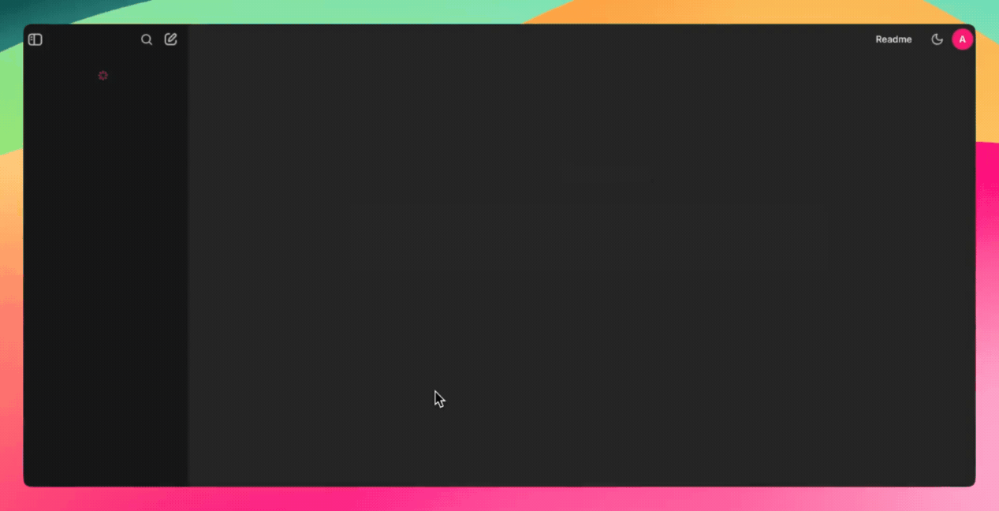
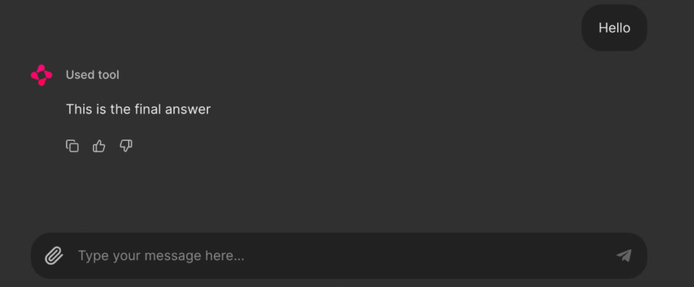

Chainlit: framework de Python para crear interfaces de chat interactivas
1. ¿Qué es Chainlit?

Chainlit nos ayuda a crear frontends para chatbots de IA, herramientas y flujos de trabajo LLM. Abstrae la complejidad del front-end y nos permite centrarnos en la lógica de Python, a la vez que proporciona soporte para añadir botones, controles deslizantes, soporte para subir archivos o incluso conectarnos a herramientas que utilicen el protocolo de contexto de modelo (MCP).
Chainlit es ideal para:
- Prototipos de aplicaciones basadas en LLM
- Crear herramientas internas
- Construir demostraciones educativas
- Conectar tus modelos a herramientas o API externas
Ideas clave:
- Está pensado para prototipos rápidos, demos educativas y herramientas internas.
- Se integra bien con otras librerías como LangChain o clientes de LLM (por ejemplo, Ollama).
- Gestiona por nosotros elementos típicos de una UI de chat:
- mensajes,
- acciones (botones, etc.),
- streaming de respuestas,
- persistencia de sesiones.
Componentes de Chainlit
Todas las aplicaciones de Chainlit se basan en unas pocas características esenciales:
-
Hooks del ciclo de vida del chat: permiten controlar lo que ocurre en las distintas fases de un chat. Por ejemplo:
@cl.on_chat_startse ejecuta cuando se inicia un chat.@cl.on_messagese ejecuta cuando el usuario envía un mensaje.@cl.on_chat_endse ejecuta cuando finaliza el chat.@cl.steplos asistentes basados en LLM realizan varios pasos para procesar la solicitud del usuario, formando una cadena de pensamiento. A diferencia de un mensaje, un step tiene un tipo, una entrada/salida y un inicio/fin.
-
Acciones del IU: Chainlit permite añadir botones con
cl.Actiony manejarlos con@cl.action_callback. Son perfectas para crear interfaces de usuario limpias e interactivas sin necesidad de que el usuario introduzca texto. -
Transmisión de mensajes: Con los LLM que admiten la transmisión de tokens, podemos transmitir respuestas en tiempo real utilizando
stream=True, haciendo que nuestra aplicación parezca más dinámica y receptiva. -
Configuración con
config.toml: Este archivo permite activar funciones como la persistencia del chat, la carga de archivos, la personalización del tema y los ajustes de usabilidad, todo ello sin modificar tu código Python.
2. Instalación y requisitos
Requisitos básicos son:
- Python 3.8 o superior.
- Instalar Chainlit desde
pip:
pip install chainlit
Para el ejemplo con Ollama + LangChain, se añaden:
pip install chainlit langchain langchain-community
3. Conceptos básicos de Chainlit
Todas las apps de Chainlit se apoyan en unos pocos conceptos fundamentales.
3.1. Hooks del ciclo de vida del chat
Chainlit proporciona decoradores que se ejecutan en distintos momentos de la conversación:
@cl.on_chat_start: se lanza al empezar un chat.@cl.on_message: se lanza cuando el usuario envía un mensaje.@cl.on_chat_end: se lanza al terminar una sesión.
Construir con @cl.on_chat_start
Este hook se ejecuta cuando se inicia una nueva sesión de chat. Podemos utilizarlo, por ejemplo, para saludar al usuario, mostrar un mensaje de bienvenida o inicializar el estado de la sesión.
import chainlit as cl
@cl.on_chat_start
def on_chat_start():
print("A new chat session has started!")

Construir con @cl.on_message
Este hook de mensaje se ejecuta cuando el usuario envía un nuevo mensaje. Lo utilizamos para procesar la entrada del usuario, llamar a un LLM o devolver una respuesta.
import chainlit as cl
@cl.on_message
async def on_message(msg: cl.Message):
print("The user sent:", msg.content)
await cl.Message(content=f"You said: {msg.content}").send()

Explicación del código:
@cl.on_message
async def on_message(msg: cl.Message):
-
@cl.on_messagees un decorador de hook: le dice a Chainlit que esta función se debe ejecutar cada vez que la interfaz reciba un mensaje nuevo del usuario. -
async defindica que la función es asíncrona, porque dentro va a hacer operaciones de E/S (enviar mensajes de vuelta) que Chainlit gestiona conawait. -
El parámetro
msg: cl.Messagees el objeto mensaje que llega desde la UI; tiene atributos comocontent (texto que ha escrito el usuario),author,created_at, etc.
await cl.Message(content=f"You said: {msg.content}").send()
- Aquí creamos un nuevo mensaje de respuesta hacia la UI usando la clase
cl.Message. -
Le pasamos el texto de respuesta en el parámetro
content, usando unaf-stringpara incluir lo que escribió el usuario:- Si el usuario pone
“hola”, la respuesta será“You said: hola”.
- Si el usuario pone
-
.send()envía ese mensaje a la interfaz de Chainlit, y como es una operación asíncrona, necesitasawait.
Construyendo con @cl.on_stop
El hook on_stop se ejecuta cuando el usuario pulsa el botón de parada (⏹) durante una tarea en ejecución. Sirve para cancelar operaciones de larga duración o limpiar sesiones interrumpidas.
import chainlit as cl
import asyncio
@cl.on_chat_start
async def start():
await cl.Message("Type anything and I'll pretend to work on it.").send()
@cl.on_message
async def on_message(msg: cl.Message):
await cl.Message("Working on it... you can press Stop").send()
try:
# Simulamos una tarea larga de 10 segundos
await asyncio.sleep(10)
await cl.Message("Task complete!").send()
except asyncio.CancelledError:
print("Task was interrupted!")
# Opcional, tan solo para los logs del servidor
raise
@cl.on_stop
async def on_stop():
print("The user clicked Stop!")
asyncio.sleep(10). Si el usuario pulsa el botón de parada (⏹), la tarea se cancela y se activa @cl.on_stop para registrar la interrupción.

Construir con @cl.on_chat_end
Este hook se activa cuando finaliza la sesión, ya sea porque el usuario actualiza, cierra la pestaña o inicia una nueva sesión. Suele utilizarse para registrar desconexiones o guardar el estado.
import chainlit as cl
@cl.on_chat_start
async def on_chat_start():
await cl.Message("Welcome! Feel free to leave anytime").send()
@cl.on_chat_end
async def on_chat_end():
print("The user disconnected!")
Una vez abierto el localhost, podemos trabajar con él. Cuando cerremos la pestaña o la ventana de localhost, el terminal mostrará lo siguiente:

Pasos con @cl.step
Los asistentes basados en LLM realizan varios pasos para procesar la solicitud del usuario, formando una cadena de pensamiento. A diferencia de los Message, un paso tiene un tipo, una entrada/salida y un inicio/fin.
Dependiendo de la configuración de config.ui.cot, se puede mostrar toda la cadena de pensamiento completa, ocultarla o mostrar solo las llamadas a la herramienta.
Un ejemplo sencillo de cómo llamar a una herramienta.
Veamos un ejemplo sencillo de una cadena de pensamiento que toma el mensaje de un usuario, lo procesa y envía una respuesta.
import chainlit as cl
@cl.step(type="tool")
async def tool():
# Simulate a running task
await cl.sleep(2)
return "Response from the tool!"
@cl.on_message
async def main(message: cl.Message):
# Call the tool
tool_res = await tool()
# Send the final answer.
await cl.Message(content="This is the final answer").send()

Acciones de IU (botones)
Chainlit nos permite añadir botones interactivos directamente en la interfaz de nuestro chatbot. Cada botón se define como una acción y se conecta a una función de llamada de retorno de Python. Podemos enviar botones como parte de un Mensaje utilizando el argumento acciones:
import chainlit as cl
@cl.on_chat_start
async def start():
actions = [
cl.Action(
name="hello", #nombre del callback
label="👋 Say Hello",
icon="smile",
payload={"value": "hi"}
)
]
await cl.Message("Click a button!", actions=actions).send()
Así es como podemeos gestionar la pulsación de un botón:
@cl.action_callback("hello")
async def on_hello(action: cl.Action):
await cl.Message("Hello there! 👋").send()
El decorador @cl.action_callback("hello") indica a Chainlit que escuche los clics en un botón con el nombre "hola". Cuando se pulsa, envía un mensaje amistoso al usuario en la interfaz de chat.

Consejo: podemos personalizar la carga útil con cualquier dato que quieras enviar al servidor.
Transmisión de mensajes
Chainlit admite la transmisión en tiempo real de las respuestas LLM. Esto significa que podemos enviar contenido al usuario de forma incremental a medida que se genera.
@cl.on_message
async def on_message(message: cl.Message):
await cl.Message(content="Pensando...").send()
async for chunk in llm.astream(message.content):
await cl.Message(content=chunk, author="LLM", stream=True).send()
Vamos a desglosarlo:
- En primer lugar, muestra inmediatamente un mensaje "Pensando..." para que el usuario sepa que la aplicación está funcionando.
- Después, envía el mensaje del usuario a un LLM compatible con streaming.
- A medida que el modelo genera resultados, transmite cada fragmento (chunk) a la interfaz de usuario en tiempo real.
- El parámetro
stream=Truegarantiza que cada trozo aparezca de forma incremental en lugar de esperar a la respuesta completa.
Nota: Esto funciona mejor con los modelos que admiten streaming.
Configuración de Chainlit (config.toml)
Para desbloquear potentes funciones como la persistencia del chat, la subida de archivos, la tematización y mucho más, podemos personalizar nuestra aplicación Chainlit utilizando el archivo config.toml. Este archivo reside en la raíz del directorio de nuestro proyecto (en la carpeta .chainlit ) y nos permite ajustar el comportamiento en tiempo de ejecución sin modificar el código.
Persistencia
Este parámetro permite a Chainlit persistir el historial de chat y el estado de la sesión. Activa el hook @cl.on_chat_resume, por lo que es ideal para aplicaciones en las que los usuarios pueden desconectarse y volver más tarde.
[persistence]
enabled = true
Carga de archivos
Este ajuste permite a los usuarios subir archivos en la interfaz del chat. Podemos restringir los tipos y tamaños de archivo permitidos para garantizar la seguridad y el rendimiento.
[features.spontaneous_file_upload]
enabled = true
accept = ["*/*"]
max_files = 5
max_size_mb = 500
# 1. For specific file types:
# accept = ["image/jpeg", "image/png", "application/pdf"]
# 2. For all files of a certain type:
# accept = ["image/*", "audio/*", "video/*"]
# 3. For specific file extensions:
# accept = { "application/octet-stream" = [".xyz", ".pdb"] }
Esto permite adaptar las cargas para casos de uso de seguridad, rendimiento o específicos del dominio.
Personalización de la IU
Esta personalización cambia el nombre del asistente en el parámetro de la IU y activa la Cadena de Pensamiento (CoT)(dar las instrucciones adecuadas para facilitar al modelo la realización de tareas complejas que requieran razonamiento o resolución de problemas) en el modo de representación, que es útil para razonar paso a paso o depurar.
[UI]
name = "Assistant"
cot = "full"
Ajustes de usabilidad
Mejoran la experiencia del usuario desplazando automáticamente los mensajes nuevos a la vista y permitiendo la edición de mensajes.
[features]
user_message_autoscroll = true
edit_message = true
Los ajustes de usabilidad anteriores permiten al usuario activar las funciones de desplazamiento automático y edición de mensajes dentro de la interfaz de usuario.
4. Primer ejemplo: chatbot “Sorpréndeme” estático (sin LLM)
Ahora que conocemos los componentes básicos de Chainlit, vamos a crear una sencilla aplicación basada en una interfaz de usuario que utilice botones para mostrar datos divertidos predefinidos o mensajes de motivación para programadores.
bot_surprise_sin_llm.py
import chainlit as cl
import random
FUN_FACTS = [
"💡 ¿Sabías que Chainlit admite la subida de archivos y temas personalizados?",
"💡 ¡Puedes añadir botones, controles deslizantes e imágenes directamente en la interfaz de usuario de tu chatbot!",
"💡 ¡Chainlit admite la ejecución de herramientas en tiempo real con LangChain y LLM!",
"💡 ¡Puedes personalizar el aspecto de tu chatbot con solo un archivo CSS!",
"💡 ¡Chainlit te permite conectarte a herramientas utilizando el Protocolo de Contexto de Modelo (MCP)!
]
SURPRISES = [
"🎉 ¡Sorpresa! ¡Lo estás haciendo genial!",
"🚀 ¡Sigue así, estás haciendo un progreso increíble!",
"🌟 Dato curioso: alguien ahí fuera acaba de sonreír gracias a ti. ¿Por qué no hacer que sean dos?",
"👏 ¡Bravo! ¡Acabas de desbloquear +10 XP de desarrollador imaginario!",
"💪 Recuerda: ¡incluso los errores temen tus habilidades de depuración!"
]
@cl.on_chat_start
async def start():
actions = [
cl.Action(
name="surprise_button",
label="🎁 Sorpréndeme",
icon="gift",
payload={"value": "surprise"}
),
cl.Action(
name="fact_button",
label="💡 ¿Los sabías?",
icon="lightbulb",
payload={"value": "fact"}
)
]
await cl.Message(content="Elige una acción:", actions=actions).send()
@cl.action_callback("surprise_button")
async def on_surprise(action: cl.Action):
suprise = random.choice(SUPRISES)
await cl.Message(content=suprise).send()
@cl.action_callback("fact_button")
async def on_fact(action: cl.Action):
fact = random.choice(FUN_FACTS)
await cl.Message(content=fact).send()
El código anterior define dos listas: "FUN_FACTS" para consejos interesantes de Chainlit y "SUPRISES" para mensajes motivadores.
- Cuando se inicia un nuevo chat, se muestran dos botones: "Sorpréndeme" y "¿Lo sabías?" utilizando
cl.Action - Al hacer clic en "Sorpréndeme" se activa
@cl.action_callback("surprise_button"), el cual envía un mensaje sorpresa aleatorio. - Al hacer clic en "¿Lo sabías?" se activa
@cl.action_callback("fact_button"), que envía un hecho divertido aleatorio.
Esto crea un chatbot sencillo e interactivo mediante botones que no requiere LLM y es perfecto para aprender cómo funcionan las acciones y las llamadas de retorno de Chainlit.
Para ejecutar esta aplicación, simplemente ejecuta el siguiente comando en el terminal:
chainlit run main.py
Veremos botones interactivos en la interfaz de usuario que activan datos o mensajes divertidos.

5. Proyecto: Bot Sorpréndeme Powered by Ollama
Ahora, vamos a automatizar este proceso y a generar los mensajes de sorpresa y de hecho utilizando un LLM local a través de Ollama.
import chainlit as cl
from langchain_community.llms import Ollama
import random
llm = Ollama(model="mistral", temperature=0.7) # Usamos cualquier modelo local ligero
# Reusable action buttons
def get_action_buttons():
return [
cl.Action(
name="surprise_button",
label="🎁 Sorpréndeme",
icon="gift",
payload={"value": "surprise"}
),
cl.Action(
name="fact_button",
label="💡 ¿Los sabías?",
icon="lightbulb",
payload={"value": "fact"}
)
]
@cl.on_chat_start
async def start():
await cl.Message(content="Elige una acción a continuación para ver algo divertido:").send()
await cl.Message(content="", actions=get_action_buttons()).send()
@cl.action_callback("surprise_button")
async def on_surprise(action: cl.Action):
prompt = "Envía un mensaje sorpresa breve y motivador a un desarrollador. ¡Hazlo divertido!"
try:
surprise = llm.invoke(prompt).strip()
except Exception:
surprise = "🎉 ¡Sorpresa! ¡Lo estás haciendo genial!"
await cl.Message(content=surprise).send()
await cl.Message(content="", actions=get_action_buttons()).send()
@cl.action_callback("fact_button")
async def on_fact(action: cl.Action):
prompt = "Dame un dato divertido y útil sobre los LLM o Chainlit."
try:
fact = llm.invoke(prompt).strip()
except Exception:
fact = "💡 ¿Sabías que puedes añadir controles deslizantes y botones a Chainlit con tan solo unas pocas líneas de código?"
await cl.Message(content=fact).send()
await cl.Message(content="", actions=get_action_buttons()).send()
- Define dos botones
cl.Action: "Sorpréndeme" y "¿Lo sabías?" utilizando una función reutilizable get_action_buttons(). - Al inicializar el chat (
@cl.on_chat_start) envía un mensaje con estos botones interactivos. - Cuando el usuario pulsa el botón "Sorpréndeme", el gestor
@cl.action_callbackenvía un mensaje al LLM solicitando un mensaje breve y edificante de los programadores. La respuesta se limpia con la función.strip()y se devuelve al chat. - Del mismo modo, al hacer clic en "¿Sabías que...?" se invoca el LLM con una pregunta que solicita un dato informativo sobre Chainlit o los LLM.
- Si el LLM falla, se devuelven respuestas estáticas de emergencia.
- Después de cada interacción, los botones se reenvían para mantener el bucle conversacional.
Esto demuestra cómo combinar Chainlit UI con la generación de contenidos basada en LLM, ofreciendo una base modular y extensible para aplicaciones de chat locales potenciadas por IA.
Ejecuta el siguiente comando en el terminal:
ollama run mistral
chainlit run main.py
Ahora tenemos un asistente de IA local y en directo que genera mensajes automatizados.

6. Casos de uso recomendados
- Prototipos de aplicaciones LLM: probar ideas de agentes o chatbots sin tener que construir un frontend completo.
- Herramientas internas: interfaces de chat para equipos (por ejemplo, asistentes de documentación, bots internos de soporte).
- Demos educativas: mostrar cómo funcionan LLMs, LangChain u otras librerías con una UI amigable.
- Conexión con APIs y herramientas externas: crear interfaces de chat que llamen a APIs, bases de datos u otros servicios.
Probar funciones propias en Mistral Studio
Usar la herramienta integrada "búsqueda" en el Agente Meeting Summarizer

Actividad guiada: Crea un agente con herramientas
En esta actividad vamos a usar modelo de Mistral que acceda a funciones externas y que pueda llamar durante una conversación.
- Definir un esquema de herramienta que describa su función.
- Enviar un mensaje que active una llamada a la herramienta
- Ejecutar la función localmente y devuelve el resultado al modelo.
Este patrón funciona con cualquier fuente de datos: API, bases de datos o servicios internos.
Paso 1: Definir la función
Definir la función que el modelo va a llamar. Este ejemplo crea una get_weather herramienta que acepta el nombre de una ciudad.
import json
import os
from mistralai import Mistral
client = Mistral(api_key=os.environ["MISTRAL_API_KEY"])
# Definir el esquema de la herramienta.
tools = [
{
"type": "function",
"function": {
"name": "get_weather",
"description": "Obtiene la temperatura actual de una ciudad dada.",
"parameters": {
"type": "object",
"properties": {
"city": {
"type": "string",
"description": "Nombre de la ciudad, e.g. 'Madrid'."
}
},
"required": ["city"]
}
}
}
]
Paso 2: Enviar una solicitud con la herramienta
Hacer al modelo una pregunta que requiera la herramienta. El modelo devuelve una respuesta de tipo tool_calls en lugar de una respuesta de texto.
messages = [
{"role": "user", "content": "¿Qué tiempo hace en Madrid hoy?"}
]
response = client.chat.complete(
model="mistral-medium-latest",
messages=messages,
tools=tools,
)
tool_call = response.choices[0].message.tool_calls[0]
print(f"El modelo va a invocar a: {tool_call.function.name}")
print(f"Con los argumentos: {tool_call.function.arguments}")
Paso 3: Ejecutar la función y devolver el resultado.
Ejecutar la función con los argumentos del modelo y, a continuación, devolver el resultado para que el modelo pueda generar una respuesta en lenguaje natural.
# Simular la función (reemplazar con una llamada a la API real)
def get_weather(city: str) -> dict:
return {"city": city, "temperature": "27°C", "condition": "Soleado"}
# Ejecutar la llamada a la herramienta
args = json.loads(tool_call.function.arguments)
result = get_weather(**args)
# Devuelve el resultado al modelo
messages.append(response.choices[0].message)
messages.append({
"role": "tool",
"name": tool_call.function.name,
"content": json.dumps(result),
"tool_call_id": tool_call.id,
})
final_response = client.chat.complete(
model="mistral-medium-latest",
messages=messages,
tools=tools,
)
print(final_response.choices[0].message.content)
# "Hoy hace 25ºC en Madrid y está soleado."
Código completo:
import json
import os
from mistralai.client import Mistral
from dotenv import load_dotenv
load_dotenv()
client = Mistral(api_key=os.environ["MISTRAL_API_KEY"])
# Definir el esquema de la herramienta.
tools = [
{
"type": "function",
"function": {
"name": "get_weather",
"description": "Obtiene la temperatura actual de una ciudad dada.",
"parameters": {
"type": "object",
"properties": {
"city": {
"type": "string",
"description": "Nombre de la ciudad, e.g. 'Madrid'."
}
},
"required": ["city"]
}
}
}
]
messages = [
{
"role": "system",
"content": "Eres un asistente útil. Usa la herramienta get_weather cuando el usuario pregunte por el tiempo."
},
{
"role": "user",
"content": "¿Qué tiempo hace en Madrid?"
}
]
response = client.chat.complete(
model="mistral-medium-latest",
messages=messages,
tools=tools,
)
tool_call = response.choices[0].message.tool_calls[0]
print(f"El modelo va a invocar a: {tool_call.function.name}")
print(f"Con los argumentos: {tool_call.function.arguments}")
# Simular la función (reemplazar con una llamada a la API real)
def get_weather(city: str) -> dict:
return {"city": city, "temperature": "25°C", "condition": "Soleado"}
# Ejecutar la llamada a la herramienta
args = json.loads(tool_call.function.arguments)
result = get_weather(**args)
# Devuelve el resultado al modelo
messages.append(response.choices[0].message)
messages.append({
"role": "tool",
"name": tool_call.function.name,
"content": json.dumps(result),
"tool_call_id": tool_call.id,
})
final_response = client.chat.complete(
model="mistral-medium-latest",
messages=messages,
tools=tools,
)
print(final_response.choices[0].message.content)
# "Hoy hace 25ºC en Madrid y está soleado."
Paso 4: Verificar
Una ejecución exitosa imprime una respuesta en lenguaje natural que incluye el valor de retorno de la herramienta. El modelo:
- Detectó que la solicitud requería datos externos.
tool_callsgeneró una solicitud estructurada- Incorporó el resultado de nuestra función en una respuesta conversacional.
Podemos configurar la opción tool_choice: "any" para forzar al modelo a llamar siempre a una herramienta, o podemos utilizar tool_choice: "auto" (opción predeterminada) para dejar que el modelo decida.
Paso 5: Añadir una llamada a una API que devuelve el tiempo
Importamos la librería requests:
import requests
Modificamos la función/herramienta get_weather
def get_weather(city: str) -> dict:
# 1) Geocodificación
geo_url = "https://geocoding-api.open-meteo.com/v1/search"
geo_resp = requests.get(geo_url, params={"name": city, "count": 1, "language": "es", "format": "json"}, timeout=20)
geo_resp.raise_for_status()
geo_data = geo_resp.json()
results = geo_data.get("results", [])
if not results:
return {
"city": city,
"error": f"No se encontró la ciudad '{city}'."
}
place = results[0]
latitude = place["latitude"]
longitude = place["longitude"]
resolved_name = place["name"]
country = place.get("country", "")
# 2) Tiempo actual
weather_url = "https://api.open-meteo.com/v1/forecast"
weather_resp = requests.get(
weather_url,
params={
"latitude": latitude,
"longitude": longitude,
"current": "temperature_2m,weather_code",
"timezone": "auto"
},
timeout=20
)
weather_resp.raise_for_status()
weather_data = weather_resp.json()
current = weather_data.get("current", {})
temp = current.get("temperature_2m")
code = current.get("weather_code")
code_map = {
0: "Despejado",
1: "Mayormente despejado",
2: "Parcialmente nuboso",
3: "Cubierto",
45: "Niebla",
48: "Niebla con escarcha",
51: "Llovizna ligera",
53: "Llovizna moderada",
55: "Llovizna densa",
61: "Lluvia ligera",
63: "Lluvia moderada",
65: "Lluvia intensa",
71: "Nieve ligera",
73: "Nieve moderada",
75: "Nieve intensa",
80: "Chubascos ligeros",
81: "Chubascos moderados",
82: "Chubascos violentos",
95: "Tormenta"
}
return {
"city": resolved_name,
"country": country,
"temperature_c": temp,
"condition": code_map.get(code, f"Código meteorológico {code}"),
"latitude": latitude,
"longitude": longitude
}
Documentación paso a paso de on_message en Chainlit con Mistral
Esta función implementa el bucle principal de conversación entre Chainlit, el modelo de Mistral y las herramientas externas o tools. Chainlit ejecuta @cl.on_message cada vez que el usuario envía un mensaje desde la interfaz, y Mistral soporta llamadas asíncronas con herramientas mediante chat.complete_async(..., tools=..., tool_choice="auto").
Función completa
@cl.on_message
async def on_message(message: cl.Message):
messages = cl.user_session.get("messages", [])
messages.append({"role": "user", "content": message.content})
final_answer = None
for _ in range(5):
response = await client.chat.complete_async(
model=MODEL,
messages=messages,
tools=TOOLS,
tool_choice="auto",
)
assistant_message = response.choices[0].message
assistant_payload = {
"role": "assistant",
"content": assistant_message.content or ""
}
tool_calls = getattr(assistant_message, "tool_calls", None)
if tool_calls:
assistant_payload["tool_calls"] = [
{
"id": tool_call.id,
"type": "function",
"function": {
"name": tool_call.function.name,
"arguments": tool_call.function.arguments,
},
}
for tool_call in tool_calls
]
messages.append(assistant_payload)
if not tool_calls:
final_answer = assistant_message.content or "No tengo respuesta."
break
for tool_call in tool_calls:
function_name = tool_call.function.name
function_args = json.loads(tool_call.function.arguments)
if function_name not in AVAILABLE_TOOLS:
tool_result = json.dumps(
{"error": f"Herramienta no implementada: {function_name}"},
ensure_ascii=False
)
else:
tool_result = await AVAILABLE_TOOLS[function_name](**function_args)
messages.append(
{
"role": "tool",
"name": function_name,
"tool_call_id": tool_call.id,
"content": tool_result,
}
)
cl.user_session.set("messages", messages)
await cl.Message(
content=final_answer or "No he podido generar una respuesta final."
).send()
1. Decorador y firma
@cl.on_message
async def on_message(message: cl.Message):
@cl.on_messageindica a Chainlit que esta función debe ejecutarse cada vez que el usuario envía un mensaje desde la interfaz.- La palabra clave
asyncconvierte la función en asíncrona, lo que permite hacer llamadas HTTP o a APIs sin bloquear la aplicación. - El parámetro
message: cl.Messagerepresenta el mensaje recibido y su contenido textual está disponible enmessage.content.
2. Recuperar el historial y añadir el nuevo mensaje
messages = cl.user_session.get("messages", [])
messages.append({"role": "user", "content": message.content})
cl.user_session.get("messages", [])recupera el historial guardado para ese usuario y devuelve una lista vacía si todavía no existe. Chainlit documentauser_sessionprecisamente para mantener estado por conversación.- Después se añade el nuevo mensaje del usuario al historial con el formato esperado por las APIs de chat: un diccionario con
roleycontent. - Gracias a esto, el modelo recibe contexto acumulado y no solo el último mensaje aislado.
3. Preparar la variable de respuesta final
final_answer = None
- Esta variable se usa para almacenar la respuesta final que se mostrará al usuario al terminar el proceso.
- Se inicializa con
Noneporque todavía no se sabe si el modelo responderá directamente o si antes necesitará llamar a una herramienta.
4. Bucle de iteración controlado
for _ in range(5):
- Este bucle permite repetir el ciclo de modelo -> tool -> modelo varias veces.
- El límite de 5 iteraciones actúa como medida de seguridad para evitar bucles infinitos si el modelo sigue solicitando tools sin cerrar la respuesta.
5. Llamada al modelo de Mistral
response = await client.chat.complete_async(
model=MODEL,
messages=messages,
tools=TOOLS,
tool_choice="auto",
)
client.chat.complete_async(...)realiza una llamada asíncrona al modelo de Mistral. El cliente Python oficial documenta este patrón para chat completions.model=MODELindica el nombre del modelo que se quiere usar.messages=messagesenvía el historial completo al modelo.tools=TOOLSregistra las herramientas que el modelo puede invocar.tool_choice="auto"deja que el modelo decida si necesita o no usar una herramienta.
6. Extraer el mensaje del asistente
assistant_message = response.choices[0].message
- La API devuelve una lista de posibles respuestas en
choices, y aquí se toma la primera. assistant_messagecontiene el mensaje generado por el asistente, incluyendo tanto texto natural como posiblestool_calls.
7. Crear la estructura base del mensaje del asistente
assistant_payload = {
"role": "assistant",
"content": assistant_message.content or ""
}
- Se construye un diccionario que representa el mensaje del asistente dentro del historial.
rolevale"assistant"porque ese mensaje proviene del modelo.assistant_message.content or ""evita problemas si el contenido viene vacío porque el modelo solo ha devuelto llamadas a herramientas.
8. Comprobar si el modelo ha pedido herramientas
tool_calls = getattr(assistant_message, "tool_calls", None)
getattr(...)intenta leer el atributotool_callsy devuelveNonesi no existe.- Si el modelo necesita información externa,
tool_callscontendrá una lista de llamadas a herramientas con nombre y argumentos.
9. Guardar las tool calls en el historial
if tool_calls:
assistant_payload["tool_calls"] = [
{
"id": tool_call.id,
"type": "function",
"function": {
"name": tool_call.function.name,
"arguments": tool_call.function.arguments,
},
}
for tool_call in tool_calls
]
- Si existen llamadas a tools, se añaden al mensaje del asistente para que el historial refleje exactamente lo que el modelo ha pedido hacer.
- Cada llamada incluye un
id, el tipofunction, el nombre de la herramienta y los argumentos serializados en JSON. - Ese
ides importante porque luego se utilizará para vincular la respuesta de la tool con la llamada original.
10. Añadir el mensaje del asistente al historial
messages.append(assistant_payload)
- En este punto el historial ya incluye la intervención del asistente, tanto si es una respuesta normal como si es una petición de tools.
- Mantener este historial consistente es clave para que el siguiente turno del modelo entienda lo que ya ha ocurrido en la conversación.
11. Salida temprana si no hay tools
if not tool_calls:
final_answer = assistant_message.content or "No tengo respuesta."
break
- Si
tool_callsestá vacío o esNone, significa que el modelo ya ha generado una respuesta final y no necesita herramientas adicionales. - Esa respuesta se guarda en
final_answery se interrumpe el bucle conbreak. - Este es el caso más simple: usuario pregunta, modelo responde directamente.
12. Recorrer cada llamada a herramienta
for tool_call in tool_calls:
function_name = tool_call.function.name
function_args = json.loads(tool_call.function.arguments)
- Si el modelo ha pedido tools, se recorre cada llamada en un bucle.
function_nameextrae el nombre de la herramienta solicitada.tool_call.function.argumentsllega como texto JSON yjson.loads(...)lo convierte en un diccionario Python listo para usar.
13. Verificar si la herramienta existe y ejecutarla
if function_name not in AVAILABLE_TOOLS:
tool_result = json.dumps(
{"error": f"Herramienta no implementada: {function_name}"},
ensure_ascii=False
)
else:
tool_result = await AVAILABLE_TOOLS[function_name](**function_args)
AVAILABLE_TOOLSes un diccionario que relaciona nombres de herramientas con funciones Python reales.- Si la herramienta pedida por el modelo no existe, se genera una respuesta de error en JSON.
- Si la herramienta sí existe, se ejecuta con
await, pasando los argumentos con**function_args. - Esta es la parte donde el backend realmente ejecuta lógica externa; el modelo solo decide qué función quiere usar, pero no la ejecuta por sí mismo.
14. Guardar el resultado de la tool en el historial
messages.append(
{
"role": "tool",
"name": function_name,
"tool_call_id": tool_call.id,
"content": tool_result,
}
)
- El resultado de la herramienta se añade al historial como un mensaje con
role: "tool". tool_call_idenlaza este resultado con la llamada original hecha por el modelo.- En la siguiente iteración del bucle, Mistral verá este resultado y podrá generar una respuesta final basada en esos datos.
15. Guardar el historial actualizado en la sesión
cl.user_session.set("messages", messages)
- Cuando termina el bucle, el historial completo se guarda otra vez en la sesión del usuario.
- Esto permite que la conversación continúe en mensajes posteriores manteniendo todo el contexto previo.
16. Enviar la respuesta final a Chainlit
await cl.Message(
content=final_answer or "No he podido generar una respuesta final."
).send()
- Se construye un mensaje de salida para la interfaz de Chainlit y se envía con
.send(). - Si
final_answertiene contenido, eso es lo que verá el usuario. Si no, se muestra un mensaje de error controlado.
Resumen conceptual
Esta función implementa el siguiente flujo de trabajo: Chainlit recibe el mensaje del usuario, recupera el historial, consulta a Mistral, detecta si el modelo quiere usar herramientas, ejecuta esas herramientas en Python, añade los resultados al historial y vuelve a consultar al modelo hasta obtener una respuesta final. Ese patrón corresponde al flujo estándar de tool calling documentado por Mistral y puede integrarse de forma natural en los hooks de Chainlit.
Esquema mental
Puede explicarse en seis pasos:
- Chainlit recibe un mensaje del usuario.
- Se añade ese mensaje al historial de conversación.
- Se pregunta a Mistral si puede responder o si necesita una tool.
- Si pide una tool, el backend ejecuta la función Python correspondiente.
- El resultado de la tool se devuelve al historial como
role="tool". - Mistral genera la respuesta final y Chainlit la muestra en pantalla.
Otro ejemplo de la documentación de Chainlit
import os
import json
import asyncio
import chainlit as cl
from dotenv import load_dotenv
from mistralai.client import Mistral
load_dotenv()
mai_client = Mistral(api_key=os.getenv("MISTRAL_API_KEY", "").strip())
@cl.step(type="tool", name="get_current_weather")
async def get_current_weather(location):
# Make an actual API call! To open-meteo.com for instance.
return json.dumps(
{
"location": location,
"temperature": "29",
"unit": "celsius",
"forecast": ["sunny"],
}
)
@cl.step(type="tool", name="get_home_town")
async def get_home_town(person: str) -> str:
"""Get the hometown of a person"""
if "Napoleon" in person:
return "Ajaccio, Corsica"
elif "Michel" in person:
return "Caprese, Italy"
else:
return "Paris, France"
"""
JSON tool definitions provided to the LLM.
"""
tools = [
{
"type": "function",
"function": {
"name": "get_home_town",
"description": "Get the home town of a specific person",
"parameters": {
"type": "object",
"properties": {
"person": {
"type": "string",
"description": "The name of a person (first and last names) to identify.",
}
},
"required": ["person"],
},
},
},
{
"type": "function",
"function": {
"name": "get_current_weather",
"description": "Get the current weather in a given location",
"parameters": {
"type": "object",
"properties": {
"location": {
"type": "string",
"description": "The city and state, e.g. San Francisco, CA",
},
},
"required": ["location"],
},
},
},
]
async def run_multiple(tool_calls):
"""
Execute multiple tool calls asynchronously.
"""
available_tools = {
"get_current_weather": get_current_weather,
"get_home_town": get_home_town,
}
async def run_single(tool_call):
function_name = tool_call.function.name
function_to_call = available_tools[function_name]
function_args = json.loads(tool_call.function.arguments)
function_response = await function_to_call(**function_args)
return {
"tool_call_id": tool_call.id,
"role": "tool",
"name": function_name,
"content": function_response,
}
# Run tool calls in parallel.
tool_results = await asyncio.gather(
*(run_single(tool_call) for tool_call in tool_calls)
)
return tool_results
@cl.step(type="run", tags=["to_score"])
async def run_agent(user_query: str):
messages = [{"role": "user", "content": f"{user_query}"}]
number_iterations = 0
answer_message_content = None
while number_iterations < 5:
completion = mai_client.chat.complete(
model="mistral-large-latest",
messages=messages,
tool_choice="auto",
tools=tools,
)
message = completion.choices[0].message
messages.append(message)
answer_message_content = message.content
if not message.tool_calls:
break
tool_results = await run_multiple(message.tool_calls)
messages.extend(tool_results)
number_iterations += 1
return answer_message_content
@cl.set_starters
async def set_starters():
return [
cl.Starter(
label="What's the weather in Napoleon's hometown",
message="What's the weather in Napoleon's hometown?",
),
cl.Starter(
label="What's the weather in Paris, TX?",
message="What's the weather in Paris, TX?",
),
cl.Starter(
label="What's the weather in Michel-Angelo's hometown?",
message="What's the weather in Michel-Angelo's hometown?",
),
]
@cl.on_message
async def main(message: cl.Message):
"""
Main message handler for incoming user messages.
"""
answer_message = await run_agent(message.content)
await cl.Message(content=answer_message).send()
Actividad: Migrar agentes de Mistral Studio a una app Chainlit con funciones propias
Contexto
En la sesión anterior (LLM2) creaste en Mistral Studio AI dos agentes en el playground:
- Agente A – Tutor técnico de Flask
- Agente B – Generador creativo de ideas
Aquella actividad se centraba en definir bien el rol, las instrucciones y el tono de cada agente, pero sin usar herramientas (tools) ni funciones propias del agente.
En esta sesión vamos a dar un paso más: vas a construir una aplicación propia en Python usando Chainlit como interfaz de chat, reutilizando la idea de los dos agentes, pero añadiendo funciones personalizadas que el modelo pueda llamar cuando lo necesite, siguiendo el patrón de integración oficial entre Chainlit y Mistral.
Objetivo de la actividad
Construir una aplicación llamada, por ejemplo, llm3-chainlit-agentes, que:
- use Chainlit como interfaz de chat,
- se conecte a Mistral AI desde Python,
- implemente dos agentes lógicos (A y B) con instrucciones distintas,
- y añada funciones personalizadas (tools) que el modelo pueda invocar mediante function calling, para tareas como obtener el tiempo, la hora o el precio de una acción.
Definición de los agentes
Puedes mantener los nombres originales, pero se recomienda actualizar ligeramente el rol del agente A para encajarlo mejor con el uso de tools:
- Agente A – Planificador práctico / consultor técnico
- Ayuda a planificar tareas, proyectos o pequeñas “rutas” (por ejemplo, un mini plan de estudio, una ruta de viaje sencillo, etc.).
-
Se centrará más en información factual y estructurada y en usar tools como
get_timeoget_weather. -
Agente B – Generador creativo de ideas
- Genera ideas de contenido, propuestas creativas, textos breves o variaciones de un mismo concepto.
- Puede apoyarse en
get_stock_priceu otras tools si quieres que genere ideas de contenido financiero/tecnológico.
Las instrucciones (prompt del agente) de A y B pueden reutilizar y adaptar lo que ya definiste en Mistral Studio, ajustando ahora las descripciones para mencionar que el agente puede llamar a funciones auxiliares cuando lo considere útil.
Funciones personalizadas (tools)
Debes implementar al menos tres funciones propias en Python que el modelo pueda usar como herramientas. Algunas funciones recomendadas son:
get_weather(location, date_range)- Devuelve un tiempo simulado o consultado vía API (puede ser una respuesta inventada pero coherente, o una llamada real a una API de clima si quieres).
get_time(city_or_timezone)- Devuelve la hora local de una ciudad o zona horaria.
get_stock_price(symbol)- Devuelve el precio simulado de una acción (o real, si integras una API sencilla).
Puedes añadir otras funciones si te interesa, siempre que:
- tengan parámetros bien definidos,
- devuelvan datos estructurados,
- y sean razonablemente útiles para alguno de los dos agentes.
El patrón a seguir es similar al del que hemos visto en el apartado Mistral + Chainlit, donde se definen tools como get_home_town y get_current_weather con un decorador @cl.step(type="tool") y un bloque tools = [...] con el esquema JSON que se pasa al modelo.
Requisitos mínimos de la aplicación
Tu aplicación deberá cumplir, como mínimo, los siguientes puntos:
- Interfaz en Chainlit
- La app se ejecuta con
chainlit run app.py. -
Al abrirla en el navegador puedes escribir mensajes y recibir respuestas.
-
Selección de agente
- Debes poder elegir si hablas con el Agente A o con el Agente B.
-
Esto puede hacerse de varias formas:
- mediante un comando inicial (
/agenteAo/agenteB), - mediante un selector en el arranque,
- o detectando el modo por el primer mensaje.
- mediante un comando inicial (
-
Uso de Mistral con tools
- El código debe llamar a la API de Mistral con una lista de
tools(funciones) definidas en JSON, siguiendo el modelo de function calling. -
Cuando el modelo decida usar una tool, tu backend debe:
- leer el
tool_calldevuelto, - ejecutar la función Python correspondiente,
- y devolver el resultado al modelo para que este construya la respuesta final.
- leer el
-
Integración de las funciones personalizadas
- Las funciones
get_weather,get_time,get_stock_price(u otras que definas) deben estar realmente implementadas en el código y ser invocadas por el agente. -
El comportamiento debe ser observable en la conversación (por ejemplo, Chainlit puede mostrar un paso tipo “tool” cuando se ejecuta la función, usando
@cl.step(type="tool")). -
Demostraciones de uso
- Debes probar la app con varios ejemplos, de forma que:
- en algunos casos el agente responda sin tools,
- y en otros casos el agente necesite llamar a una o varias tools para completar la respuesta.
Pasos guiados (recomendados)
- Paso 1: App Chainlit mínima
- Crea un
app.pyque use Chainlit y un modelo de Mistral, sin tools. -
Comprueba que puedes enviar y recibir mensajes.
-
Paso 2: Añadir un solo tool sencillo
- Implementa
get_timecomo función Python. - Define el tool JSON y pásalo al modelo.
-
Comprueba, con algún prompt tipo “¿Qué hora es en Londres?”, que el modelo decide llamar a la función.
-
Paso 3: Añadir
get_weatheryget_stock_price - Implementa estas funciones y añádelas a la lista de tools.
-
Diseña prompts donde tenga sentido usarlas (tiempo en una ciudad, precio de una acción, etc.).
-
Paso 4: Instrucciones de los agentes A y B
- Adapta en el código los prompts de sistema / instrucciones que ya diseñaste en Mistral Studio para el Tutor Flask y el Generador creativo.
-
Ajusta el rol de A hacia algo más práctico/planificador, y deja B como creativo.
-
Paso 5: Selector de agente
- Añade un mecanismo sencillo para indicar con qué agente hablas (por ejemplo, guardando una variable en la sesión de usuario de Chainlit).
- Asegúrate de que las tools se comportan de forma coherente con cada agente (el A usará más
get_time/get_weather, el B quizá useget_stock_pricepara ideas financieras, etc.).
Entrega mínima (para esta actividad)
Para la actividad asociada a esta sesión se pedirá, como mínimo:
- El fichero
app.py(o equivalente) con la integración de Chainlit + Mistral + tools. - Un breve
README.md(o texto en la entrega) que explique: - cómo arrancar la app,
- qué hace el agente A,
- qué hace el agente B,
- qué funciones personalizadas se han implementado,
- y cómo probarlas (ejemplos de prompts).
En sesiones posteriores se podrá ampliar esta base para incluir RAG y otras capacidades más avanzadas, pero en esta actividad el foco está en migrar los agentes del playground a una app propia y darles herramientas mediante function calling.